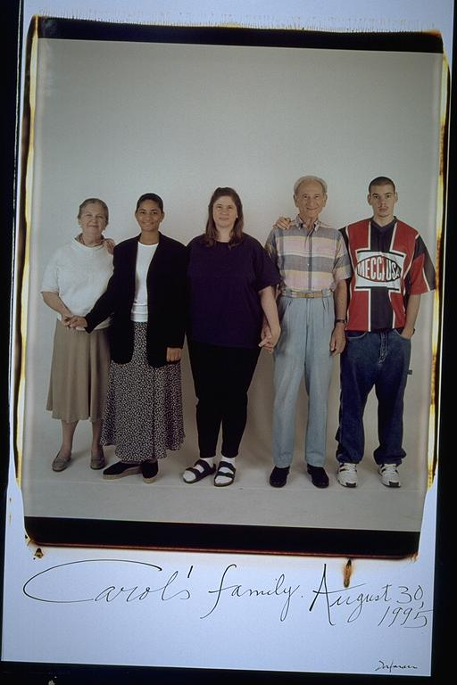

Eugene: This picture of Aldo's grandparents reminds me of when Aldo taught me how to drive. It was on Polly's Island, which for those who don't know, doesn't have any stores. We thought that being in South Carolina would be fun for two weeks but after the fourth day we got pretty bored. We played chess and I cut all of my hair off. Aldo mistakenly put on tanning lotion instead of sunscreen and got a really bad sunburn.
